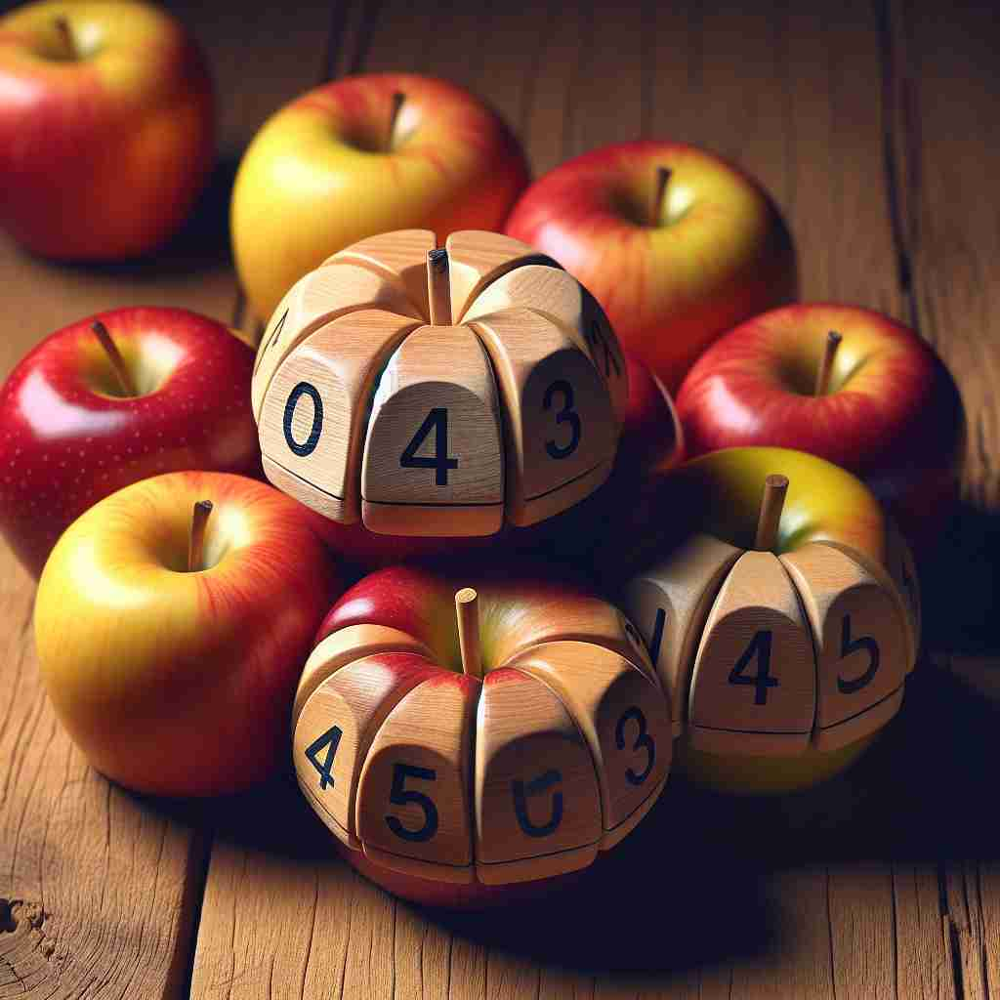

💬 There are at least three apples on the table. 桌子上至少有三个苹果。

💬 There are at least three apples in the bowl. 碗里至少有三个苹果。
💬 There are at least three apples on the table. 桌子上至少有三个苹果。
💬 There are at least three apples in the bowl. 碗里至少有三个苹果。
🧠 'At least' 的核心含义是'不少于'或'至少'，这个概念可以应用于数量、程度或情况。想象一条线，'at least'标记了这条线的最低点或起点。无论是谈论数量、表达委婉语气，还是在负面情况中寻找积极面，都可以联想到这个'最低点'的概念。这种思维方式有助于理解和记忆'at least'的各种用法。
🗝️ adv. not less than a particular number or amount 不小于某个特定的数字或金额
🎭 在一个超市中，妈妈正在挑选苹果。小女孩问道：'我们要买多少个苹果？' 妈妈回答说：'我们至少需要六个苹果，这样大家都有足够的苹果吃。'
💬 The project will take at least two weeks to complete. 该项目至少需要两周时间才能完成。
🌳 由介词短语 "at"（在，表示位置）和 "least"（最少，最小的）组成。结合起来表示 "至少" 的概念，强调最低限度。
💡 记忆 "at-least" 时，可以联想为 "在最少的情况下"，强调达到最低要求。可以把 "at" 视为一个起点，而 "least" 代表最小的量，加在一起表示稳定要求的下限。
🗝️ adv. even if nothing else 即使没有其他事情
🎭 在学校里，一个学生在抱怨午餐不好吃，朋友安慰他说：'至少，我们有冰淇淋可以吃。即使其他食物不好吃，冰淇淋还是很美味的。'
💬 At least he tried, even if he didn't succeed. 至少他尝试了，即使他没有成功。
🤔 从"不少于"延伸到"即便最少也要"的意思
🗝️ adv. used to reduce the force of a statement 用于减轻陈述的力度
🎭 在公司会议中，经理在汇报销售数据时说：'我们的销量未达到预期目标，但至少，我们在广告方面看到了积极的反馈。'
💬 The situation is difficult, or at least very complicated. 情况很困难，或者至少非常复杂。
🤔 从"最低限度"引申为"至少可以说"，表示一种保守或委婉的说法
🗝️ adv. used to introduce a positive aspect of a generally negative situation 用于引入一般负面情况中的积极方面
🎭 在一个暴风雨后，农夫查看被毁坏的庄稼，叹息道：'虽然庄稼受损严重，但至少，我们的牲畜都安然无恙。'
💬 The food was terrible, but at least the service was good. 食物很糟糕，但至少服务很好。
🤔 基于"最起码"的概念，用来强调在不利情况中的一个积极面